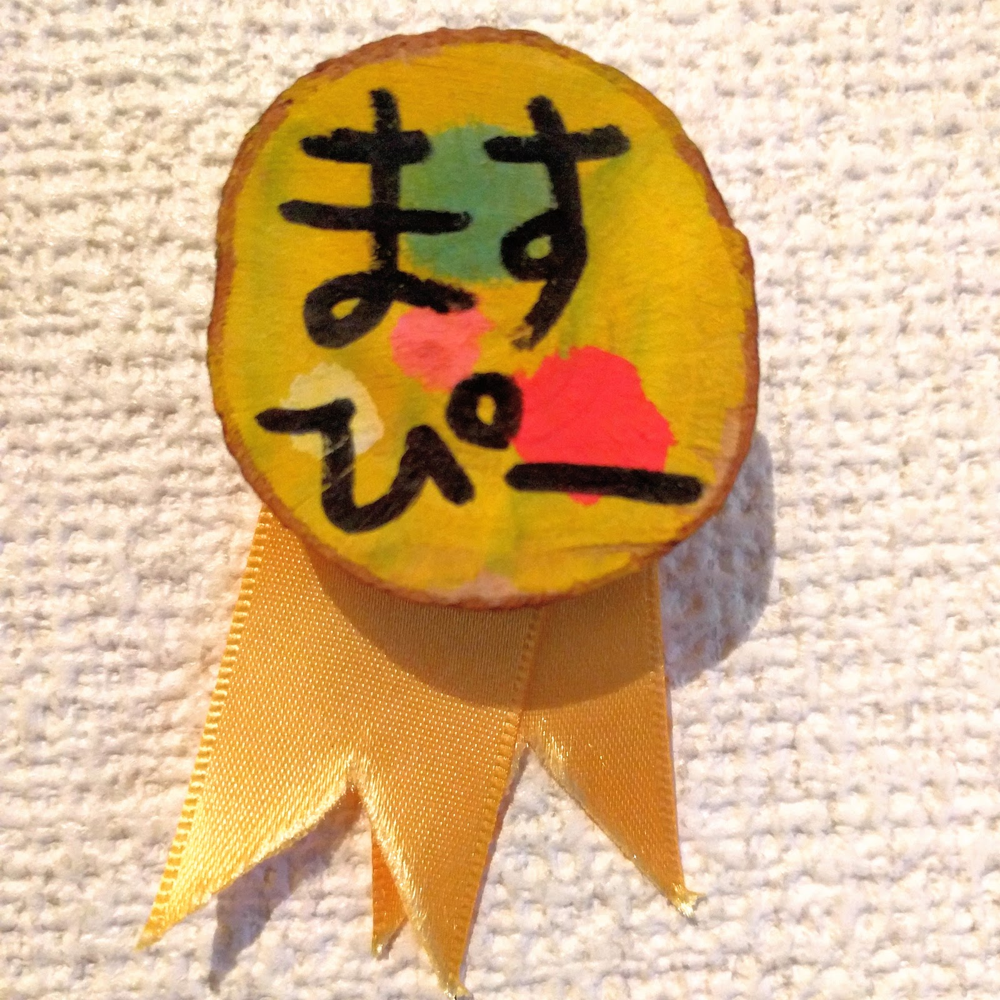
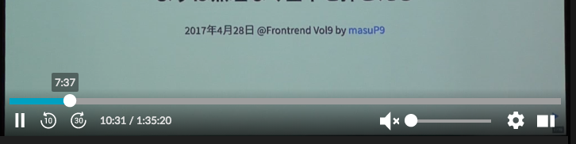

Reactでキーボード操作
(ｶﾁｬｶﾁｬｶﾁｬ…ｯﾀｰﾝ!)
するために
「まかないてっく#１杯目 〜フロントエンドを語ろう〜」 masuP9
@masuP9

- 桝田 草一（ますぴー）
- 株式会社サイバーエージェント
- フロントエンドデベロッパー
- CAのアクセシビリティおじさん(自称)
生放送がログイン不要・高画質で見放題のプラットフォーム
本題
キーボード操作対応してますか？
目次
- キーボード操作に対応するとは
- 適切な要素を使おう
- キーボードイベント実装のアレコレReactあんまり関係なくなった...
Caution!!
LTにつき乱暴な要約や
意訳、私見が混ざっています
キーボード操作に対応するとは
ここでは特別なショートカットキーを用意することではなく、通常のUIがキーボードから操作できることを指します
実行したよ！
キーボード操作できる！
キーボード操作に対応するとは
- 要素がキーボードで操作可能であることをUAに伝える
- 標準的な操作（キーを押す）で実行を可能にする
いいことあるの？
（力強く）ある
(ｶﾁｬｶﾁｬｶﾁｬ…) (ｯﾀｰﾝ!)
したかった俺たちは...
Vimmer こころの叫び
昨日からgoogle検索の j, kショートカットが使えなくて辛い
— AAkira (@_a_akira) July 27, 2017
キーボードだけでブラウジング出来ないじゃん！
正確に言うとこれはショートカットキーやけどな…
アクセシビリティ
すべての機能がキーボードを用いて利用可能であれば、キーボードの利用者、（キーボード入力を生成する）音声入力、（オンスクリーン・キーボードを使用する）マウス、及び出力として疑似的な打けんを生成する様々な支援技術により、その機能を実現することができる。
分かりやすく言うと
キーボード操作に対応していると、キーボード以外の様々なデバイス（マウスも含む）や支援技術からの操作に対応しやすい。
さらに言うと
キーボード操作はデバイスとUIとの標準的なプロトコル
未知のデバイスでも
キーボード操作信号さえ生成すれば操作可能
例えばこのスライドも視線入力装置で操作できる（かもしれない）
UIが対応さえしていればの話
やるしかないのでは？
💪
キーボード操作対応しよう
 1
1
適切な要素を使おう
キーボード操作できない例の実装
<div onclick="hoge();">hogehoge</div>- 要素がキーボードで操作可能であることをUAに伝える 🙅
- 標準的な操作（キーを押す）で実行を可能にする 🙅
Better
<div tabindex="0" onclick="hoge();" onkeyup="fuga();">
実行
</div>Best
<button type="button" onclick="hoge();">実行</button>基本的は適切な要素を使用するだけ
buttoninput[type="text"]input[type="checkbox"]input[type="range"]
とはいえまだそのまま使えなかったり...
detail(summary)dialoginput[type="date"]
オリジナルデザインだったり...

キーボードイベント実装のアレコレ
Reactのfocusイベント
onFocusIn/onFocusOutイベントがない。
そのかわり `onFocus` が伝搬する(blurも一緒)
本来は、focusinはバブリングしfocusはバブリングしない
実際使用する場合はCSSの:focusと:focus-withinぽい感じ
以下でおｋ
<div onFocus={} onBlur={}>
<button type="button">Button</button>
<button type="button">Button</button>
<button type="button">Button</button>
</div>onFocusでも、ラッパーの要素でイベントが発火する
ただし中のButtonにはフォーカスが当たる必要があるので、フォーカスが当たる形で隠す必要がある。
フォーカスがあたる非表示
レンダリングされてないのはもちろん、display: noneやvisibility:hiddenでもフォーカスを受け取らなくなる
.Element:not(.is-focus) {
opacity: 0;
pointer-events: none;
}の組み合わせがオススメ。
ネイティブ要素がない場合の
キーボード操作
どのキーでどう動けばいいの？
Slider Keyboard Interaction
- Right Arrow: Increase the value of the slider by one step.
- Up Arrow: Increase the value of the slider by one step.
- Left Arrow: Decrease the value of the slider by one step.
- Down Arrow: Decrease the value of the slider by one step.
- Home: Set the slider to the first allowed value in its range.
- End: Set the slider to the last allowed value in its range.
- Page Up (Optional): Increment the slider by an amount larger than the step change made by Up Arrow.
- Page Down (Optional): Decrement the slider by an amount larger than the step change made by Down Arrow.
最低限はTabとEnterで動くようにするでOK
他にもいろいろあるけど…
やっていきましょう 💪
参考文献
＼(^o^)／ｵﾜﾘ
[PR]WCAGもくもく会 #2
定員なので9月以降に乞うご期待！